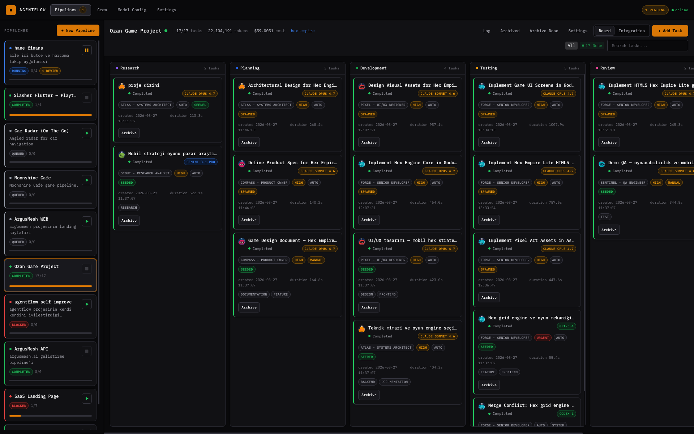
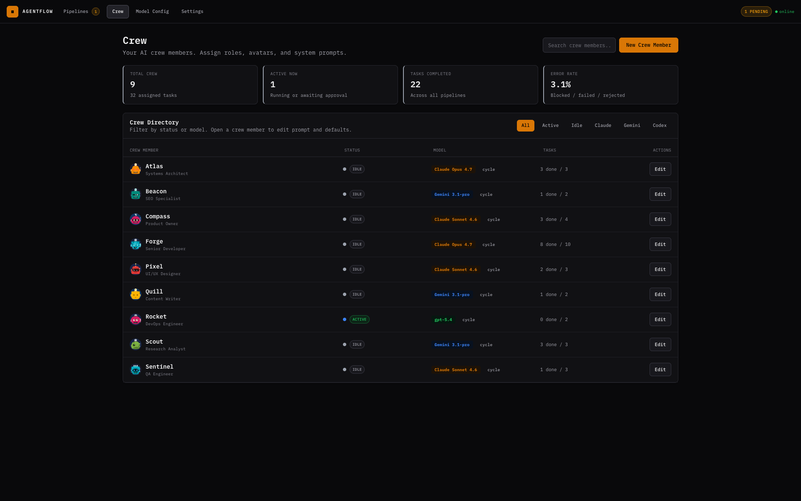
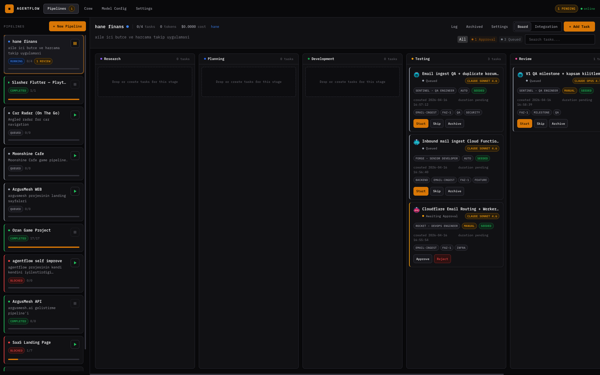

Pipeline-based orchestration for Claude Code, Codex, and Gemini CLI. Every task runs in its own git worktree. Every task picks its own agent. The whole thing speaks MCP — so another agent can drive it.
If I had to throw away two and keep one, I'd keep worktree isolation. But the magic is all three.
Ten agents in parallel on the same repo. They can't see each other. No merge pain. Clean per-task diffs. Side-by-side A/B of the same prompt across Claude, Codex, Gemini.
Claude Opus for planning. Sonnet for implementation. Codex for refactors. Gemini for volume. Same pipeline, five minds, one board. You stop thinking about which model — the role knows.
Built-in MCP server with 17 tools. Claude Desktop, Cursor, or your own agent can list, create, approve, and run pipelines. Meta-agents without Python glue.

Each links to its full breakdown — task graph, agent/model per step, real prompts, gotchas.
Everything runs locally. Nothing leaves your machine. The UI, the REST API, and the MCP server all share the same database.


Four sub-pages. Each stands alone. Each links back into the others.
git clone https://github.com/rifat-simoom/operant.git
cd operant
npm install
npm run devApache-2.0, self-hosted, local-first. No accounts, no cloud, no waitlist. If you're a solo dev, indie hacker, or team-of-one builder already running Claude Code / Codex / Gemini CLI — this is for you.